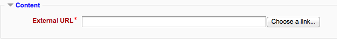
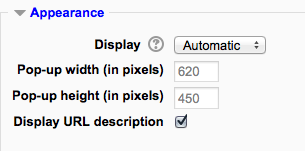
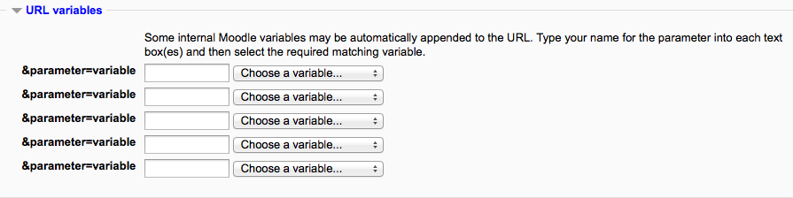

Content¶
Either enter the URL in the external URL field or click the “Choose a link” button to open the file picker and choose a URL YouTube, Picasa etc (depending on which repositories are enabled for the site).
A URL (Uniform or Universal Resource Locator) is a link on the internet to a website or online file. Teachers can use the URL resource to provide their students with web links for research, saving the student time and effort in manually typing out the address. The URLS can be displayed in various ways - for example, opening in a new window so a student can access and use the URL, close it and return easily to their original Moodle course page.
- Turn editing on.
- From the the “Add an activity or resource” link (or, if not present, the “Add a resource” drop down menu),choose URL. All settings may expanded by clicking the “Expand all” link top right.
Name
Whatever you type here will form the link learners click on to view the URL so it is helpful to give it a name that suggests its purpose.
Description
Add a description of your page here. Click “Show editing tools” to display the rich text editor, and drag the bottom right of the text box out to expand it.
Display description on the course page
If this box is ticked, the description will appear on the course page just below the name of the URL.
Either enter the URL in the external URL field or click the “Choose a link” button to open the file picker and choose a URL YouTube, Picasa etc (depending on which repositories are enabled for the site).
(These settings are collapsed by default)
Display
- Automatic - Make the best guess at what should happen (probably what is wanted 99% of the time).
- Embed - Show the Moodle page with heading, blocks and footer. Show the title/description of the item and display the file directly in the page as well
- Open - No Moodle heading, blocks, footer or description - just show the file in the web browser (e.g. shows image, PDF, flash animation, taking up the whole browser window)
- In pop-up - Same as ‘Open’, but opens a new browser window to show this file (without the Moodle heading, blocks, etc) - this browser window also does not have all the menus and address bar in it.
The above options are the default display options. Additional display options (see below) may be enabled by an administrator in Site administration > Plugins > Activity modules > URL.
Pop-up width/height
If your URL is to be displayed in a pop-up, specify the width and height here.
Display URL name/description
To show the resource name and/or description when clicking to access the URL, simply tick the appropriate checkboxes.
(These settings are collapsed by default.)
This section allows you to pass internal information as part of the URL.
This is useful if the URL is actually an interactive web page that takes parameters, and you want to pass something like the name of the current user, for example.
(These settings are collapsed by default)
These settings are visible if Conditional activities and Activity completion have been enabled in the site and the course.
Alternatively, if an administrator has enabled the experimental feature drag and drop upload of text/links in Administration > Site administration > Development > Experimental > Experimental settings, a link can be dragged into a section of the course and given a name.
- View URL resource
- Add a new URL resource